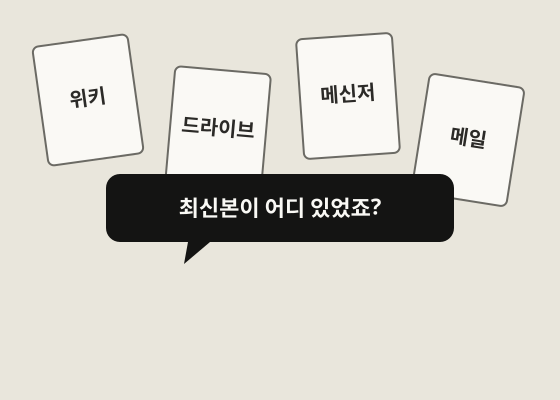
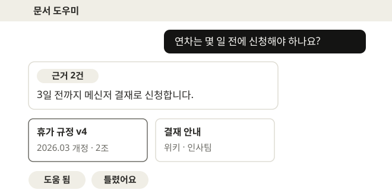

새 문서는 바로 검색 저장소에 넣는다
업로드 감지쪼개기임베딩저장
올린 지 몇 분 안에 답에 쓰인다.
SLIDE TYPE GALLERY
발표에서 자주 나오는 장 22가지를 한 주제로 채운 견본
장마다 패턴 하나. 같은 이야기를 이어 붙였다.
AGENDA
모델만 쓸 때의 약점
검색과 에이전트 구조
정답률과 질문 유형별 결과
일정과 결정 요청
PROBLEM

필요한 규정이 저장소 네 곳에 흩어져 있다.
찾는 시간이 일하는 시간을 먹는다.
CONCEPT
질문과 뜻이 가장 가까운 문서 조각을 저장소에서 찾는다.
찾은 조각을 원래 질문과 합쳐 프롬프트(모델에 보낼 입력)를 채운다.
채워진 프롬프트로 모델이 근거 있는 답을 쓴다.
STRUCTURE
질문과 뜻이 가장 가까운 조각을 찾아 넘긴다
사내 문서를 찾기 좋은 벡터로 바꿔 쌓아 둔다
TWO MODES
올린 지 몇 분 안에 답에 쓰인다.
밤사이 교체가 끝나면 개정 전 문단은 답에서 빠진다.
CODE · 2 / 5
# 검색 노드: 질문으로 문서 조각을 찾는다
def retrieve(state: DocState):
question = state["messages"][-1].content
chunks = vector_db.similarity_search(question, k=3)
return {
"context": chunks,1 "search_count": state["search_count"] + 1,2 }context 비어 있음 → 조각 3개. 답변 노드가 읽는다.
search_count 2 → 3
PRODUCT

1 2 3예시 화면 · 실제 제품 캡처로 교체한다.
답 위에 근거를 몇 건 찾았는지 먼저 보인다.
개정일과 조항이 보이고, 누르면 그 조항의 원문이 열린다.
틀린 답은 한 번에 신고하고, 문서 담당자에게 간다.
JOURNEY
CONTRACT
질문 보내기
메신저 · 웹
근거 열기
출처 카드 클릭
답변 평가
도움 됨 · 틀렸어요
문서 갱신
담당자가 수정
CONTRAST
에이전트가 대신 찾는다.
사람은 판단에 시간을 쓴다.
BEFORE → AFTER
모델만 쓸 때
문서 검색을 붙이면
모델은 그대로 두고, 질문과 함께 찾은 문서 조각을 넘긴다.
WHY
“모델 지식에만 기대면”
“문서 검색을 붙이면”
지식 시점 : 학습 이후 정보는 모른다
최신 정보 : 문서만 바꾸면 반영된다
환각 : 없는 사실을 그럴듯하게 만든다
근거 답변 : 찾은 문서를 근거로 답한다
도메인 부족 : 회사 사정을 모른다
사내 특화 : 내부 문서를 그대로 쓴다
출처 불명 : 어디서 온 말인지 모른다
출처 표시 : 근거 문서를 함께 보여준다
갱신 부담 : 모델 지식을 바꾸려면 재학습한다
쉬운 갱신 : 문서는 다시 색인하면 된다
비용 : 재학습 비용이 크다
비용 절감 : 재학습 없이 붙인다
PROBLEM → FEATURE
지금 겪는 문제
저장소 네 곳
개정 전 문서 인용
근거를 못 댄다
담당자 한 명
틀려도 못 고친다
대응하는 기능
통합 색인
최신본 우선 검색
출처 카드
메신저 봇
피드백 신고
→ 출처 카드가 근거를 확인하는 시간을 줄인다.
KEY NUMBER
사내 규정 질문 정답률
같은 질문 200건을 두 방식으로 묻고 사람이 채점했다.
예시 데이터 · 레이아웃 견본용 수치
TABLE
| 방식 | 정답률 | 출처 제시 | 응답 시간 | 비고 |
|---|---|---|---|---|
| 모델만 | 54% | 0% | 1.2초 | 근거 없음 |
| 키워드 검색 + 모델 | 68% | 92% | 1.8초 | 동의어에 약함 |
| 벡터 검색 + 모델 | 81% | 97% | 2.1초 | 이번 제안 |
| 벡터 + 재순위 | 84% | 97% | 3.4초 | 찾은 결과를 다시 정렬 · 느림 |
벡터 검색은 재순위보다 3%p 낮지만 1.3초 빠르다.
예시 데이터 · 레이아웃 견본용 수치
ANALYSIS
원인 가설: 담당자 정보가 문서에 없다. 조직도를 색인에 더해 확인한다.
출처: 예시 데이터 · 레이아웃 견본용 수치
COMPONENTS
위키 연결
현재 확인됨쪼개기·임베딩
현재 확인됨벡터 검색 + 최신본 우선
제안질문 창구
제안틀린 답 모아 보기
예정WHO FIRST
규정을 옆자리에 묻는다
첫 주 질문을 봇이 받는다
질문이 가장 많고, 문서 위치를 모른다.
같은 질문에 반복 답변
예외만 답한다
규정 확인을 대신 해 줌
링크 하나로 끝
낡은 문서를 모른다
신고가 모인다
문서 유출 걱정
권한별 검색
ROLES
답마다 출처를 단다.
규정 해석은 사람이 한다.
ROADMAP
DECISION
매주 질문 50건을 채점한다.
도입 전 4주 대비, 담당자에게 다시 물은 비율.
답변 중 근거 문서를 연 비율.
문서를 고친 뒤 답에 쓰이기까지.